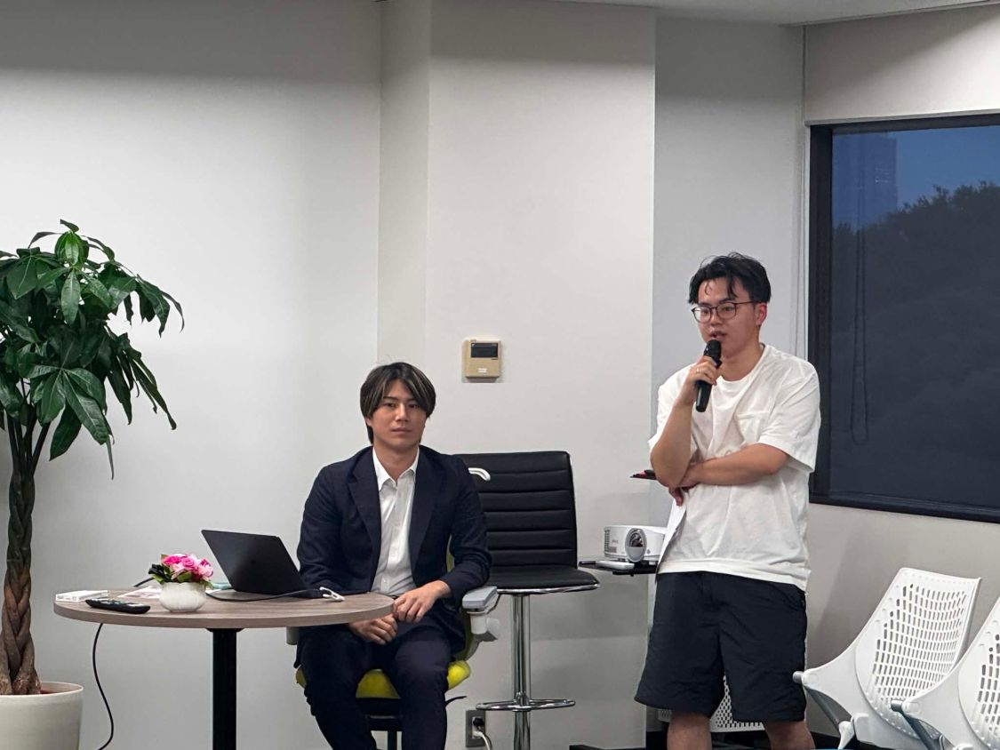

About
機械にできる作業に、人生を捧げるのは、
もう終わりにしませんか
繰り返しの作業はAIに任せれば、業務はぐっと「楽」になります。そこから生まれた時間で、人はもっと多くのことに本気で向き合えるはずです。
本気で打ち込みたい仕事、家族との食卓、仲間との一杯。一つ一つに向き合えることが、新しい価値を生んでいく。それこそが私たちが目指す「楽しい」であり、つくり続けたい「舞台」です。
株式会社AIdollargameは、AIプロダクトを自社で開発・運用しながら、中小企業の現場にAIを届けている会社です。

